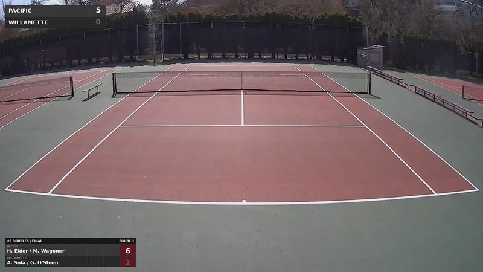

Broadcast & Streaming
Tennis SRT Scorebug Gateway
Manages simultaneous SRT video restreams for tennis tournaments with up to 6 court cameras. Built with FFmpeg and NVIDIA NVENC hardware encoding, featuring a web interface, per-court status, FFmpeg logs, and Google Chat webhook notifications.